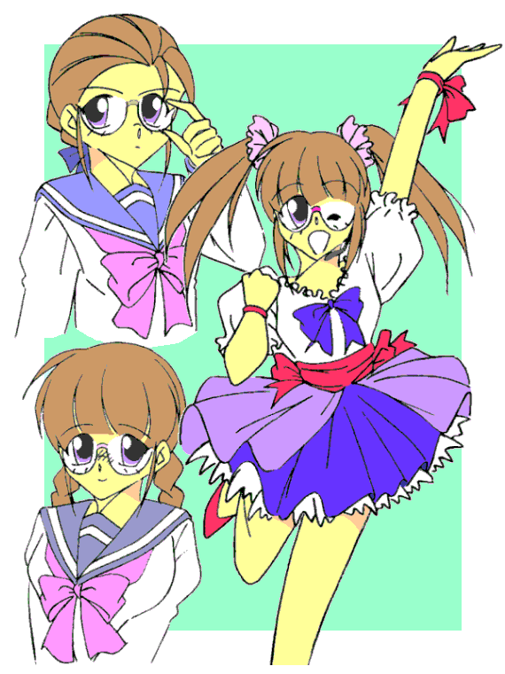

昨日から始まった三年生としての生活。いよいよ最上級生、そして受験。
気を引き締めていかないと……そうだ、もう女の子になっている暇なんてないぞっ！
僕は朝食を採りながら、今一度決意を新たにしていた。
「おはようございま〜す」
後楽高校の真新しい女子の制服に着替えた洸ちゃんが、ダイニングに降りてきた。
姉ちゃんもあとから一緒に降りてくる。多分着付けを手伝っていたんだろう。
今日は入学式だということもあって、教師である姉ちゃんもスーツでびしっと決めている。
「えへへ、……どう？」
セーラー服姿で、ぐるっと回って見せる洸ちゃん。スカートがふわっと舞い上がった。
「あら？ 可愛いじゃない」
母さんの言葉に、洸ちゃんは恥ずかしそうな、でも嬉しそうな表情を浮かべる。
「うん、よく似合っているよ、洸ちゃん」
お世辞抜きでそう思う。なんせ洸ちゃんは、僕にとっても可愛い「妹」なのだから。
「本当？ 司お姉ちゃん」
目を輝かせて、洸ちゃんは笑顔とともに近寄ってきた。こらこら、今の僕は男。「お姉ちゃん」じゃ――
「ふっふ〜ん……えいっ♪」
洸ちゃんは後ろ手に隠し持っていたものを、いきなり僕に向けて吹き付けてきた。
うっ！ こ、この香りは……う、あ、あああああ――
「……や〜んっ、これお姉ちゃんの香水じゃないのよっ！？」
甘い香りを嗅いだと同時に、あたしはいきなり女の子化してしまった。
……そう、女性の服だけじゃなく、今では化粧品のにおいすら変身の対象になっちゃったの。
「ちっ、やられたわね……今からシャワー浴びていたら遅刻するわ。つかさ、仕方ないから女子の制服に着替えてらっしゃい」
「ううっ、それしかないか……」
いつもは率先してあたしを女の子にするお姉ちゃんだけど、それを洸ちゃんに「取られた」からか悔しそうだ。
あたしはため息をつくと、椅子から立ち上がった。
ちなみに今まではお姉ちゃんのお古のセーラー服を着ていたんだけど、進級を機に新しい女子の制服を手に入れた。
……実は転校していったクラスメイトの女の子が、無用になったからってあたしにプレゼントしてくれたものなんだけどね♪
でも……なんだかますます「男子復帰」が遠のいていくような気がする……
着せ替え少年
Ｄｒｅｓｓ Ｕｐ Ｂｏｙ
〜Ｘ Ｃｈａｎｇｅ〜
作：城弾
結局あたしは女子として、洸ちゃんと肩を並べて登校する。
途中で、さつきちゃんと合流。
「えへへ、なんだか楽しいね。こうしてみんなで一緒に学校に行けるなんて」
あたしもどちらかというと小柄だけど、洸ちゃんは女の子としても小さい。にこにこ笑うその愛らしさにつられてほんわかしそうになるけど、あたしは心を鬼にして、自分としては珍しく強い調子でびしっと言い返した。
「今日は案内があるからこのまま一緒に行くけど、明日からはあたし一人で行くわよ｣
「えーっ？ なんで？」
「今朝みたいなこと、毎回されてたまるもんですか。女の子にされる前に先に行きます」
「そんなぁ……あたし、前からお姉ちゃんが欲しかったのにぃ」
うっ、そんな仔犬みたな顔してしょげ返っても……だ、ダメよっ。
「まぁ仕方ないわね。毎日女の子にされていたら、そのうちその姿の方が
“基本” になっちゃいそうだもん……」
さつきちゃんがそう言いながら、呆れたような苦笑を浮かべた。
今日は入学式がメイン。だから新二年生と新三年生は授業なし。
学校に着くと真新しい制服に身を包んだ一年生たちがいっぱい。初々しいわねぇ……あ、あの男の子なんて小学生みたい。
「同じクラスだといいね、足立くん」
「そうだね。ところで望田はクラブなんにする？」
「チアリーディテングなんてあるといいんだけど……足立君はやっぱり音楽部？」
望田と呼ばれた隣の女の子、髪が長くて瞳が印象的で、まるでモデルさんのように綺麗ね。
でも、そんないい雰囲気の二人に別の男の子が無遠慮に近寄ってきた。
端整な顔立ちをしているんだけど、なんだろう？ どこか嫌な感じ――
そう、例えるなら「ほのぼのとした優しい世界観にいきなりわいて出て、それら全てを粉砕して」しまいそうな感じ。
彼はいきなり手にしていた「元気ハツラツ」なドリンクを一気飲みすると、足立くんに向き直った。
「音楽部か。そんな選択をするとはつまらない人間だな。君は」
うわ、何かしらこいつ？ 面と向かっていきなりとんでもないことを、それも空気も読まずに脈絡なく言い放つなんて。
「…………」
温厚そうな足立くんも、さすがにむっとしている。望田さんは二人を見比べおろおろしている。
顔はいいかもしれないけど、一発で嫌いになりそう。
……いや、なった。絶対なった。プロデューサーとメインライターが許しても、あたしは絶対存在を認めないっ！
「初対面の相手にそんなこと言うなんて、ばっかみたい」
ひとこと言ってやろうと思ったら、先にショートカットの勝気そうな、小柄な女の子が間に割って入った。可愛い顔立ちだけど、さすがに不機嫌そうな表情を浮かべている。
「なっ、何いっ？ この切屋凶介のどこが馬鹿だ？ 見ろ、これでも数々の賞を――」
そう言うなり、手にしていたトートバックから賞状やらトロフィーやらを取り出して見せびらかす切殺凶介（え？ 字が違う？ かまうもんかっ）。
……っていうか、いつも持ち歩いてる？ そんなものを？ わざわざ？
話に関係のない「過去の栄光」を持ち出したことが、さらに怒りを煽ったらしい。ショートカットの女の子はそいつの自慢話を無視して、良く通る大きな声で言い放った。
「この人の保護者はどなたですか？ お子さんの管理不行き届きですよッ！！」
「…………」
手にした賞状やらトロフィーやらを取り落とし、真っ青な顔になる切殺。ざまあみろ。
「天海さん、もういいよ」
「それくらいにしましょ、晃（あきら）ちゃん」
茫然自失するそいつを尻目に、足立くんたち三人は講堂へと向かっていった。
そうかと思えば、こちらには一見裕福そうなお坊っちゃまくんが……え？ 何でそう思うかって？ だって横に「じいやさん」がいるんだもの。
さらに付け加えるなら、学生服も妙に豪華な感じにアレンジされているし。
「じいや、この上城 劍（つるぎ）、高校生活においても頂点に立つ男と言うことを証明して見せるぞ」
「坊ちゃま、ご立派でございます」
何も考えてないとしか思えないほど軽々しくお坊っちゃまくんを持ち上げるじいやさん。……いいの？ いいのそれでっ？
「当然だ。そして家を建て直すために勉強する。そのためにショ・ミーンに混じって高校に通学するのだっ」
そう言いながら、二人も講堂へ。……って、道々花びらまきますかっ！？
うーん、なんかあそこだけ世界が違うわ。
あれ？ ゴミ置き場の隅の方でカップラーメンをすすっているパンクファッションの男の人は、前に音楽を教えていた屋俥先生じゃ？
確か「パーフェクトハーモニー」を信条としていたんだけど、不祥事から引責辞職。
その後の消息は不明だったけど、なんでまたこんな姿に？
「……いいよなぁ、希望に満ちた新入生は……はぁ……どうせオレなんか……」
うわあ、やさぐれてる……なんだかすっかりいじけた性格になっちゃったみたい。
「アニキ、俺達は闇の住人……奴らのことなんかどうでもいいじゃないですか……」
あっ、隣に似たようなかっこでウ〇コ座りしてやさぐれづきあいしてるのは、こないだ退学した蔭矢間くん。
やっぱりカップラーメンをすすってる。……でも、「弟味噌」ってどんな味？ ちょっと気になるわ。
「そうだな……行こうか、相棒」「ああ、アニキとならどこまでも……」
二人はホモくさい視線を絡ませ、肩を組みながら立ち去った。……って何しに来たの？ あんたたち。
「お姉ちゃん、さすがに高校っていろんな人がいるんだね」
「あ、あんな人たちばかりじゃないのよ。それに――」
「それに？」
「ううん、なんでもない。さぁ、急ぎましょ」
若干気圧され気味の洸ちゃんの手を引き、あたしたちも講堂へ向かった。
……そうよね。服に着られて性転換するより変わった人間なんているはずないわ。
翌日――
ちゃんと男で登校したのに、学校に着くやいなや僕はあちこちから頼まれて……また女の子になっちゃった。
「仕方ないわね、ちゃんと『代役』こなしてきなさい」
なんて言ってるけど、お姉ちゃん嬉しそう。洸ちゃんより先に、あたしを女の子に変身させることができたからだと思う。でも、そんなことで張り合わないで欲しいわ。
はああ、「姉」と「妹」に、交互に女の子にされ続けるあたしって、いったい……
「でも女の子になったのはいいけど、生徒会長さんの影武者なんてあたしにできるかしら？」
うちの生徒会長さんの通称は「鉄の女」。でも、風邪を引いて休んでしまい、新入生勧誘のアピールをあたしが代役で務めることになった。
副会長さんは正直言って頼りない。事務仕事は完璧なんだけど、こういう演説のたぐいはダメらしい。
あたしは早速メイクを始めた。
背丈は同じ。バストも同じくらいなので、ここでは手を加える必要はなし。
前髪をすべて後ろへ流しておでこを見せる。首の後ろで髪を編み込んで……と、髪型はこれでよし。あとはメガネよね。
「会長のものを借りてきました。よりいっそうなりきれると思います」
「だってこれ、伊達メガネじゃないんでしょ？」
あたしの視力は両方とも１．２。当然ながら矯正の必要はない。
「短時間なら大丈夫でしょう。むしろ新入生たちの注目がぼやけて見えない分、あがらなくていいかと。……さぁ、これをつけて会長に『擬態』してください」
「擬態って……」
あたしは隕石に乗って落ちてきた脱皮生命体かっ。
仕方なくかけてみると……あれれ？ ちゃんと見えてる。
「なんだ、やっぱり伊達メガネじゃない」
「え？ そんなはずは……会長は乱視と近視が混じっていて、コンタクトで乱視を矯正してからメガネで近視を矯正しているんですよ」
ためしに他の女の子がかけてみたら、三秒とかけていられないほど強烈に度が入っていた。
それなのに、なんであたしはかけてられるの？
「つまり……メガネに “かけられて”
いるのでは？」
ううっ、そうとしか考えられないわ。最後の言い逃れも出来なくなって、観念してメガネをちゃんとかける。
会長――生徒会長になりきる。あたしは……わ、私は――
……そうだ、私はこの後楽高校の生徒会長なのだ。
私は舞台に設置された壇上に立った。ぐるりと講堂中を見渡し、咳払いをひとつ。
「新入生諸君、入学おめでとう。……さて、一つ教えてあげよう。生徒会の存在意義を。それは……大衆はブタであるっ！！ 飼いならされてぶくぶくと肥え太っている存在！ 誰かが管理しなくてはいけない！ そして我々生徒会とは、それらを管理する選ばれし者達の集う場所なのだっ…… （以下、延々とアジテーションが続く） ……というわけで、我々役員は君たちの参加を待っているぞ！」
「…………」
新入生たちは唖然としている。副会長たちも唖然としている。……ふんっ、この程度で引くとは情けない。
いや、一人だけ脈絡もなく拍手している者がいる。
「素晴らしい。ぜひオレを生徒会のメンバーにしてください」
……なんだ、昨日の朝の爽やかな雰囲気をぶち壊しにしてくれた、切殺とかいう場の空気が読めない腐れキャラか。
「オレは役に立ちますよ。……どうです？ お買い得ですよ」
そいつはまるで舞台役者のように台詞を
“歌いながら”、壇上へと上がろうとする。
が、勢い余って階段のかどで向こう脛をぶつけ……盛大にこけた。
「うわぁぁぁぁっ！ 痛い！ 痛いよままぁ〜っっ！！」
その醜態にあちこちから失笑が起こる。愚か者め、階段もまともに上れない運動音痴に生徒会の役職が務まるものか。
演説を終えて壇上から舞台袖に戻り、メガネを外して髪型を整えなおすと……あ、元に戻れた。……ってまだ女の子姿だけど。
でもよかった……あの性格のままじゃ、あとあと大変なことになってたわ。
「お疲れさま。次は演劇部のピンチヒッターよ」
「演劇部だったらなおさら自分で壇上に上がるべきじゃないの？」
「花粉症なのよ、うちの部長」
そう言って後ろを振り向く副部長さん。
はー。じゃあ、さっきからティッシュを盛大に使っている彼女が、うちの演劇部の部長さんか。
「はい、これに着替えて」
差し出されたのは舞台衣装。……って、これってどんなお芝居に使うんですか？
そしてまたメガネを手渡される。真っ赤なフレームの可愛いもの……あ、今度は伊達メガネだ。
「あたしね、素顔じゃ恥ずかしくて大勢の前に出られないの」
と、鼻声で言う部長さん。……でも、それって演劇部員としてはどうなんです？
そして……
「みなさんこんにちわぁ〜っ♪ 演劇部でぇ〜っすっ♪」
フリル満載の舞台衣装（もちろん学校の許可済♪）を着て、あたしは舞台にとび出した。……なるほど、このメガネも小道具なわけね。
胸は部長さんに合わせてＡカップ。髪の毛は真ん中から二つに分けて左右に垂らす、いわゆるツインテール。
でも、これじゃオタク趣味の男子が集まるんじゃないかしら……
心配になってそう尋ねてみたら、「演劇部はこの女子の少ない後楽高校でありながら、男子が足りなくて困っている」のだそうだ。
「今日はあたしたちのために集まってくれてありがと〜っ！！」
うおおおんっ。そんな感じで一気に盛り上がる新入生たち。
演劇部だから「お芝居」のはずなんだけど、なんだかアイドルのコンサートみたい。
ちなみにあたしは女の子になると声も変わる。それも七色の声。低く落ち着いた声から突き抜けるような高い声まで出せるのだ。
ハスキーボイスの時には「水将軍様」と呼ばれたけど、なんなんだろう？
それはさておき、今のあたしの声はロリータ声。自分で言うのもなんだけど、一番可愛らしい声。
「それじゃあ聴いてくださ〜い。歌は『Ｄｒｅｓｓ Ｕｐ Ｂｏｙ』で〜すっ」
イントロが始まる。カラオケなんだけどね。
いきなりのミニライブに唖然としている先生たち。けどお姉ちゃんだけはノリノリ。まったくもうっ。
もちろんあたしの体質を知っている二年三年もノリノリ。手拍子にダンス、果ては「つかっちゃ〜ん」なんて掛け声まで。
ああんっ、代役なのに、本名呼んだらまずいってばっ。
でもまさかやめるわけにもいかず、あたしは結局、「アイドル歌手の役を演じる演劇部の部長さん」の役をそのまま
“演じ” きってしまった。
「全く……でも、すごいパフォーマンスね、つかっちゃん」
舞台袖に戻ると、心配したさつきちゃんが駆けつけてくれた。着替えを手伝ってくれる。
「はい、最後にもう一人ね」
そうだった。まだ代役が残ってたんだ。えーと……あそこでもじもじしている女の子かな？
「あ……あの……よ、よろしくお願いします。私……あの……」
緊張している。えっと、まさか…… 「もしかして、代役立てたのって、その上がり症が理由？」
その質問に、みんなが揃って頷いた。
「…………」
というわけで、今度は図書クラブの部長さんの代わりに壇上に上がる。
彼女は儚げに喋るので、私も真似して……だけど、性格と反対にスタイルはかなりのもの。つけていたブラのサイズはＤカップ。メガネを外した顔も可愛かったので、恥ずかしがり屋でなければグラビアアイドルとタメをはれるかもね。
髪型は三つ編みお下げを二つ、そしてまたメガネをかける。
視力は問題ないのに、私、これじゃ本当に目が悪くなっちゃうかも。
「あ、あのみ……みなさん、え……えと、こ、こんにちは、と、図書クラブ、です……あ、あの、その、え……えっと……」
い、いけない……あ、上がり症までうつったの……かしら？ ……ああっ、だ、だめっ。き、緊張して……上手く、しゃべれ……ない……のっ。
でも、それが幸いするのだから、世の中わからない。涙目になってもじもじしている私に向かって、あちこちから歓声が起こった。
「うおおーっっ！」「可っ愛いーっっ！！」
といった具合に、男の子を中心に熱い？支持を受けることができた。まあ、とりあえずは結果オーライ……かしら？
でも、そんな中で私にじっと視線を注ぎ続けていた男の子が一人いたことを、そのときは知る由もなかった……

さらに次の日――
「まったく、昨日はひどい目にあったわよ」
「お疲れさん」
ぼやくあたしに対して、さつきちゃんは笑顔で労ってくれた。その隣には、いつも以上に笑顔の洸ちゃん。
「それにしても……そろそろ勘弁してよね……」
あたしは今朝もまたもや洸ちゃんに不意打ちされて、女の子にされてしまった。彼女を出し抜いて早めに登校しようと思っていたんだけど、今の時期は眠くて眠くてなかなか起きられない。ううっ……
「だってつかさお姉ちゃん可愛いんだもん。それに昨日だってノリノリで舞台に上がってたし」
「……あ、あのねぇ」
「あはは、でも昨日は確かに見事に化けてたわよね。あの三人が同一人物だなんて、一年のみんなにはわからないと思うよ」
そうでないと困る。声色も変えていたし。
生徒会長はヒステリックにハスキーに。演劇部は高めのいわゆるアニメ声。図書クラブはささやくように。
メガネなのも顔を隠せてよかった。だからばれてはいない……はず？
だけど学校について下駄箱を覗き込むと、一通の手紙が入っていた。
「なになに？ ラブレター？」
洸ちゃんが興味津々で聞いてきた。下駄箱に入ってる手紙といえば、確かにそれが定番だけど。
「相手はどこの男？」
登校してきたまことが、あたしたちの間に突然割って入ってきた。
「なんで男だって決め付けるのよっ」
思わず怒鳴りつける。一応あたしは「男」なんだから、男にラブレターもらっても困るのよ。
「だってねぇ……」
そう言うと、まことはいきなりあたしの胸の先端をつついた。「……きゃっ！」
あたしは胸を押さえて、その場に蹲ってしまう。
「ほら、その胸のどこが『男』なのよ？」
「ず、ずるいわよっ。女の子の急所を……あ？」
「自分で自分のこと『女の子』って言ってちゃ世話ないわよね〜」
まことは持ち前のクールさで混ぜ返した。「それにつかっちゃんて、男の子の時は普通っぽいけど、女の子だとかなり可愛い部類に入るしね」
「うん、昨日のあれで騙された男の子が血迷って書いたとか」
「そんなぁ……」
とりあえずあたしは封筒の裏を見た。差出人は本当に男らしく、「工藤」と名前が書かれていた。
放課後、屋上で待ってます……手紙にはそう書かれていた。気になって行ってみると、男の子が一人待っていた。
扉の閉まる音でこちらに気がついたのか、くるっと振り返る。
「来てくれたんですね。つかさ先輩」
可愛い笑顔、まだ高い声。一年生のようだ。
「貴方が……工藤君？」
「はい、工藤幹生です」
「新入生？ えっと、どこかで会ったかしら？」
今さらだけど、すらすらと女言葉が出るものね。
この体質を認識してから長いし、いつの間にか髪も背中を通り越して腰に届きそうな長さになっているし。
話がそれるけど、後楽高校の男子は髪の毛を伸ばすのは認められていない。だけど、あたしは女子扱いらしく、先生たちも他の男子も今のところ誰も何も言ってこない。それどころか女子に「綺麗な髪」とうらやましがられる始末だ。
そしてこの長さの髪を洗おうと思うと、どうしても手もみ洗いになる。裸だしシャンプーも極力男物を使っているから男の姿だけど、髪を洗うときに気を抜くと、女性的なその所作につられて、女の子になってしまいそうになることがある。
もちろん湯船に浸かるときは髪をまとめている。マナーというより、この長さで湯船につけると重たいことこの上ないからだ。最初は湯船の外にたらしていたんだけど、浴槽に張り付いたこともあり、最近では入浴時はタオルの中に入れるようにしている。
お風呂から上がれば上がったで、髪の処理がどうしても女性的な仕草になってしまう。そして洸ちゃんの不意打ちで女の子での登校を余儀なくされてもいるし……あたしの女性化に加速が掛かるのは仕方ないのかもしれない。
「いやだなあ先輩、昨日は三回も舞台に上がっていたじゃないですか」
屈託ない笑顔で笑う工藤くん。なんか可愛い……
ん？ ちょっと！？ あたしってば今、「男の子」にときめいたの！？
「……見破っていたの？ 声も目つきも胸元も全然違えてたのに？」
「わかったのは僕だけみたいですけどね」
「どうしてあたしだとわかったの？」
これはまったくの本音。昨日の代役は割と自信あったのに……
「そうですね、雰囲気が似ていたから、かな？ みんなは見た目に騙されたけど、僕は中身を見ていた――そんなとこです。ちなみに名前は演劇部の時の掛け声で。だからそれを手がかりにして下駄箱を探したんです」
中身を見ていた……それじゃあたしの本当の性別もわかってるの？
「それで……先輩の『女らしさ』に惹かれてお付き合いしたいと思いまして」
『女らしさ』って、きっと女のふりをしていたから、生粋の女の子より過剰に女性的になっちゃったのね。それしか説明つかない。
「あのね……工藤君……」
とにかくあたしはもともと「男」なんだから、男と付き合うわけにはいかない。
どうせ二年や三年はみんな知っているから、男とばれるのは別に構わないけど、付き合ったりしたらずっと女の子役……それじゃますます女性化が進んじゃう。それだけは避けたい。
「誰か付き合っている男の人がいるんですか？」
「ま……まさかっ」
工藤くんの質問に、あたしは思わず首を横に振った。……ああっ！ しまった、つい否定しちゃった。せめて付き合っている「人」って言ってくれたら、さつきちゃんがいるから首を縦に振れたんだけど。
ううう、確かに「付き合っている男」はいない……
「それじゃ一度、一度でいいからデートしてください。それから僕を振るか付き合うか決めてください。お願いしますっ！！」
「は、ハイっ」
流されて返事してしまったのに気がついたのは、大喜びの彼が立ち去った直後だった。
あたしはそのまま、しばらく屋上でへたり込んでいた。
その後、工藤くんに連絡を取って一度は断ろうとしたのだけど、逆に強引に押し切られ、今度の日曜にデートすることになってしまった。
仕方ない……とりあえずデートして、徹底的に嫌われよう。そうすれば彼も諦めがつくだろう。
ああ、また状況に流されてる……でも、もちろんこんなこと誰にも相談できないから、ナイショで進めるしかない。
あるとき、何かに気づいたまことに問い詰められて困ったけど。
「つかさくん、何か隠し事してない？」「な……何が？ そんなことするわけないじゃないか」
まことは全然信用していない目つきだったが、何も言わなかった。
デート当日の日曜日――
待ち合わせ場所は渋谷。デートだから背伸びしているのかしら？ 正直感心しないわね。
「せんぱーい」
工藤君が来た。ちょっとラフなんだけど、きちっと決まっているファッションだ。
ふふっ、可愛い……って、ま、まただ。なんであたしは男の子相手に……
そうだ、これは多分、母性本能……ってなお悪い！
男が好きな男はいても、男に母性本能をくすぐられる男なんていないわ。
「すいません、ちょっと遅れちゃって。油断しました」
「油断？」
「はい、家がすぐ近くなんで」
あ……なるほど、ここから通っているのね。
背伸びどころか自分のフィールドに持ってきたのね。なかなか堅実だわ……って好感持ってどうするのよ！？
「ところで先輩、腹減りません？ 美味い店知ってるんですよ」
「いいわ。お昼にしましょ」
よーし、これでラーメン屋とかだったら、さすがに初デートではありえない展開だし、それを理由にして……ん？
あたしは視線を感じ取って振り返った。けれど知った顔は誰もいなかった。気のせいか。
「さぁ。行きましょう。腹ペコですよ」
「ちょ……ちょっと！？」
工藤くんがぐいぐい押すから、視線の主は確かめきれなかった。
彼が連れていってくれたのはオムレツ専門店。値段も高校生に払えるくらい。
それでいてお店はおしゃれで……ううっ、後は味に文句つけるしかないけど、みんな美味しそうに食べているからそれも無理そう……
「先輩、その服とても可愛いです」
今日のあたしの格好は春物ワンピース。
あちこちにリボンがついているが、なんといっても胸元のがとても大きくて可愛い。子どもっぽいかもしれないけど。
それにしても落ち着くなり服を褒めるなんて、なかなかやるわね……って、なに褒めてんのよっ。
ああっ、いつも以上に頭の中が女の子モードになってるっ。これも男の子相手のデートっていうシチュエーションのせいかしら？
オーダーしたものが出てくるのを待ちながらおしゃべり。
工藤くんに言わせると、「まずは互いのことを知りたい」とのこと。そりゃそうよね。
あたしは工藤くんに好印象を持った。決して無理はせず、それでいて最大限に相手を喜ばせようとしている。
彼は「自分」を知っている。そして見失ったりしていない。
それに引き換えあたしは、服に着られて女の子になっちゃって……流されるにもほどがある。あ……軽く自己嫌悪。
「どうしたんですか？ 先輩」
彼が怪訝な表情をしている。
「ううん、なんでもないの。何でも――」
でも、あたしの中で何かが変わってきている……
食事を済ませ、その後はウインドウショッピング。これも高校生らしいデート。お金を使わなくても楽しめるものね。
「先輩、映画か何かがよかったですか？」
「え？ 別に。どうして？」
「いえ、定番だし……ただ先輩の好みがわからなかったし、まずはそれを知りたいなと思って」
素直ね。とてもいい子……
公園で二人で歩いたり、アイスを食べたり、あたしはすっかり女の子していた。
そしてそれは、決して嫌な気分ではなかった。いっそ完全に女の子になってしまえば、変身体質に悩みもしないんだろうけど……
夕闇が迫る。高校生のデートだけに、そろそろおしまいに。
「今日は楽しかったです。付き合ってくれてありがとうございました」
「うん、あたしの方こそ」
これは偽らざる本心。あろうことか男の子とのデートが楽しく思えていた。
あたしって、本当に女の子になっているのかも。肉体だけじゃなく心まで――
「それで……よければまた今度も」
困った。いくら工藤くんが素敵な男の子でも、あたしの本当の姿は……
そして工藤くんはまだそれを知らない。知らないから好意を寄せてくれている。どうしよう？ きっぱり振るべきなんだけど……
あたしは自分の心を決めかねていた。
「残念だけど、それは出来ない相談だな」
えっ……？ り、リョウ！？ どうしてここに？
あ、もしかして駅前での感じた視線は、リョウの？
日曜だけに普段着姿。シャツとスラックスをラフに着こなしている。これだけ見ていると、リョウが本当は女の子なんてとても思えない。
ましてや今は、ちょっときつい顔をしている。
「誰だよあんた？」
さすがの工藤君も口調がきつくなる。
「三年の若菜リョウ。つかさの恋人さ」
「ちょ、ちょっとぉ！」
抗議しかけたあたしにリョウは目配せをする。あ、そうか。それならこの子もきっぱりと諦められる。
「本当なんですか？ 先輩？」
工藤くんは真剣な表情で尋ねてくる。
「ご、ごめんなさい……」
あたしは本心から謝った。多分工藤くんは、「恋人」がいながらあたしが相手したことの謝罪と思っているだろう。でもそれは近い。付き合えないのは確かだし。
「そうかぁ……それじゃ仕方ないですね」
あまりに意外な言葉に、思わず間の抜けた表情になるあたし。
「自分でも強引と思ってたんですよ。断りきれなかったんですね。すいません……でも、一度デートして思い残すことはないです」
うわ、すごいポジティブ。逞しいわ。
「でも先輩、そいつに飽きたらいつでもお相手しますよ。それじゃ、僕はここで」
工藤くんはそう言うと走り去っていった。……ううっ、やっぱりきつかったかな。胸がずきずきする。
「とりあえずはお礼を言うわ、リョウ。でも、どうしてここがわかったの？」
「いつだって僕は君の事を見ているんだよ」
つまりストーキングしてたのね。
「でも感心しないな。いくら流されやすくても、惰性で付き合ったら彼にも悪いよ。どんなに愛し合っても結婚は出来ないし」
「あたしが男の子と結婚するわけないでしょ！」
「そうだね、戸籍の問題があるし。……でも僕となら問題ないね。僕の戸籍は女だし、君は男。肉体が逆でもね」
「うっ……」
あ、なんかまたいやな展開……
「そうだ、それはいいかも。この状態なら男子は戸籍の上で君と結ばれない。女子は体の上で君とは結ばれない。けど僕なら問題ない。戸籍と実際の性別が逆の僕なら――」
「ち……ちょっとぉっ！！」
一難去ってまた一難。リョウの目が本気だわ……
「な〜んてね。ビックリした？」
「…………」
ええしたわよ。腰が抜けそうなほどに。
帰宅して、今はお風呂。
トニックシャンプーで髪を洗ったし、香水の匂いもついてない。僕は湯船に浸かって伸びをした。
裸だし、匂いも女性的なものはない。髪も洗い終えてるし。
「ふー」
思わずため息が出る。今日は疲れた。
工藤くんには悪いことをしたな。……だけど、学校で男で通せば、もう別人だし。でも、ちょっと……可愛かったかな、彼。
あたしは湯船から出ようと立ち上がった。たわわな二つの胸が揺れて……って、えええっ？
「ええっ？ なんでっ？ どうして女の子になってるのっ？ 何も着てないし、匂いだって……あ？」
今、あたし工藤くんのこと考えてた。「可愛かったな」って。
まさか……服とか香水とかがなくても、気持ちが女性的になるだけで女になれるようになっちゃったの？
あたしがめまいを起こしたのは、湯当たりとかじゃない。
もし万が一、また男の子に恋心を抱いたら最後、裸になっても女の子……その不安があたしをよろめかせたのだった。
単発からスタートしてシリーズ化した本作ですが、さすがにそろそろ着地に入ろうと考えまして、その第一弾です。
ますます悪化している体質が不安を呼ぶと。
今回のゲストキャラクターの工藤君ですが、例によって日本ハムの選手から取ってます。
８０年代前半に活躍した投手です。
そしてサブタイの元ネタのゲーム「Ｘ Ｃｈａｎｇｅ」にも後輩に慕われると言う展開が。
その名前も工藤だったので拝借しました。
前半のコスプレはメガネッ娘で。生徒会長はインテリタイプ。図書クラブは優等生タイプ。
真ん中のはアイドルで（笑）
今回のパロはかなり多いですね。
「音撃戦士」の学生さんたちが一まとめ。
それから頂点に立つお坊ちゃまとじいやさん。
そしてあの地獄兄弟で。
次は夏の話で。これはサブタイ未定。
ラストは「卒業」のサブタイでやる予定です。
まぁネタ切れが原因なので、わいてきたら挟み込むかもしれませんが（笑）
今回もお読みいただきましてありがとうございました。
城弾
□ 感想はこちらに □